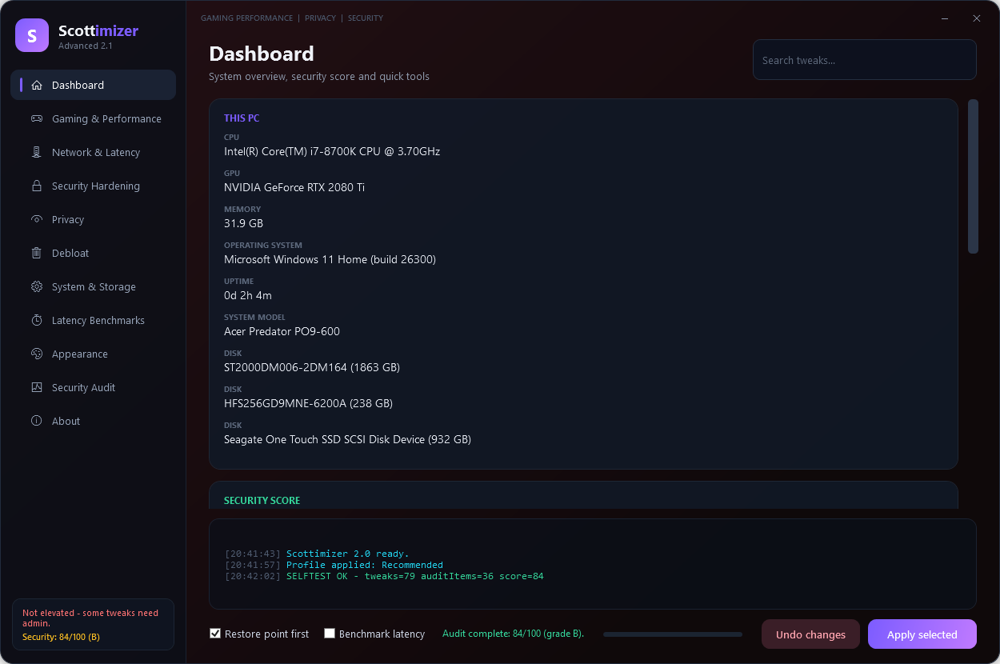
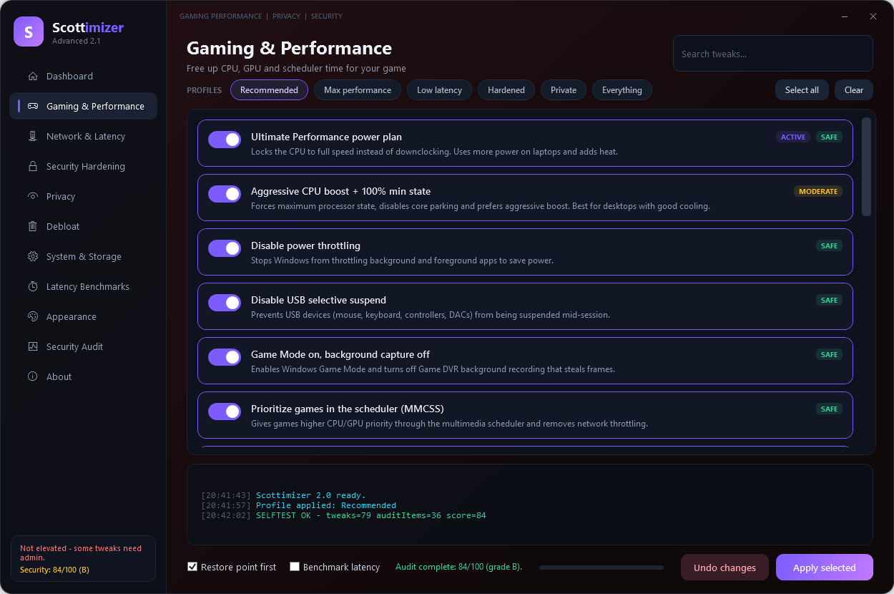
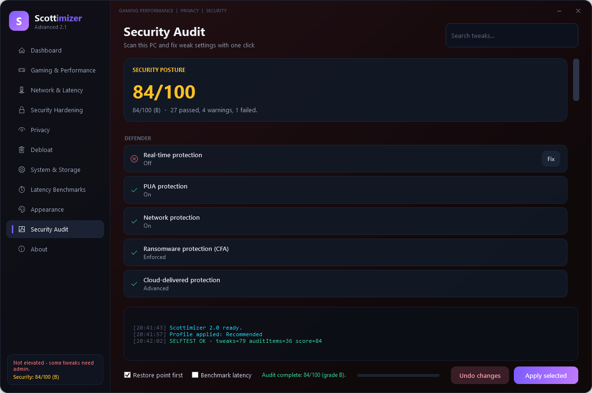
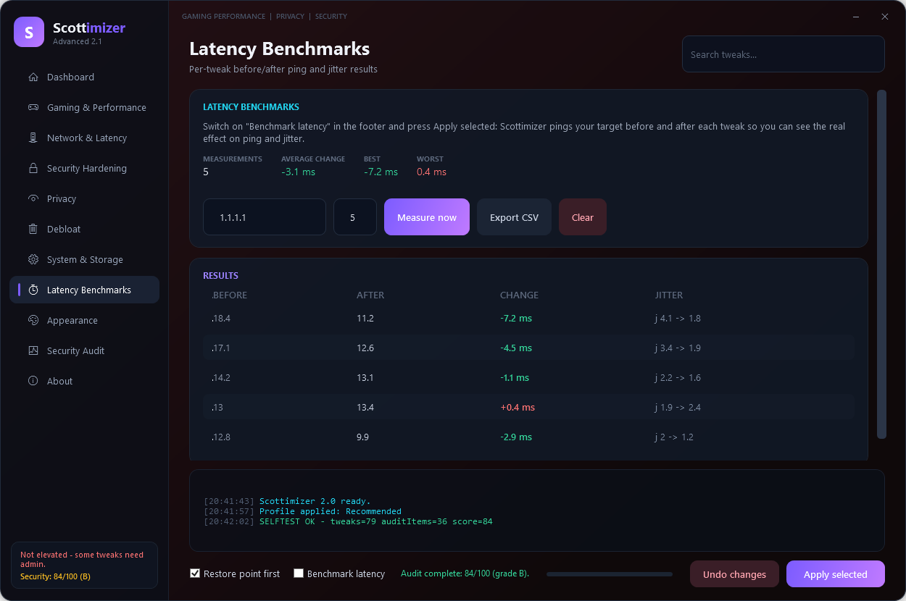
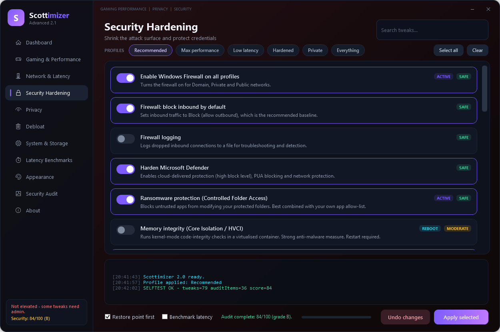
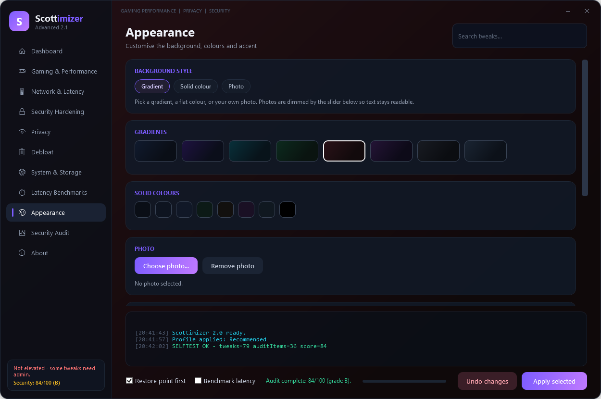

Make Windows faster & safer
An advanced gaming, privacy and security tuner for Windows 10 & 11 — 79 tweaks, a one-click security audit, per-tweak latency benchmarks, exact-state undo and a look that's entirely yours.


An advanced gaming, privacy and security tuner for Windows 10 & 11 — 79 tweaks, a one-click security audit, per-tweak latency benchmarks, exact-state undo and a look that's entirely yours.
Benchmarks, a security audit and a real undo — in one free tool.
Most “optimizers” ask you to trust them. Scottimizer shows its work — and lets you reverse it.
Everything the simple toggle tools leave out.
Gaming & performance, network latency, security hardening, privacy, debloat and system/storage — each with a risk level and plain-English description.
~36 read-only checks with a 0–100 score. Every failing item that maps to a tweak gets a one-click Fix button.
Before and after every change, it pings your target and records average latency and jitter. Green means faster. Export to CSV.
Snapshots your exact prior state — registry values and their types, service modes, power plan and DNS — so Undo restores precisely.
Gradients, solid colours or your own photo background, eight accent colours and a dim slider. Saved between launches.
Recommended, Max performance, Low latency, Hardened, Private and Everything — plus DNS flush, memory clear, network reset, DISM/SFC and more.
Click any screenshot to enlarge.






Pick whichever suits you.
Available once the package is approved by the winget community repo.
winget install SCOTTYinCntrl.ScottimizerPrefer no .exe? Clone the repo and double-click Scottimizer.bat.
git clone https://github.com/SCOTTYinCntrl/Scottimizer.git.exe is unsigned, so SmartScreen may show “Windows protected your PC” the
first time — click More info → Run anyway, or use Scottimizer.bat
to avoid the warning entirely. The full source is in the repository; read every line before you run it.
Scottimizer is free, open source and has no ads, telemetry or paid tiers. If it saved you time, latency or a headache, you can say thanks.
Every contribution goes straight back into buying test hardware and adding more tweaks.
Buy me a coffee — $ScottyRockIt27$ScottyRockIt27Not able to chip in? No problem — starring the repo, sharing the video and telling a friend helps just as much.
The things people ask before they run it.
Yes. It’s free and open source under the MIT licence, with no ads, no telemetry and no paid tier. Donations are optional and unlock nothing.
The full PowerShell source is in the repository, so you can read every line. Security changes are additive only: Scottimizer never disables Microsoft Defender, the firewall or Windows Update. Every tweak records its exact prior state so Undo restores it precisely.
The executable is unsigned, so SmartScreen shows “Windows protected your PC” the first time. Click More info → Run anyway, or run Scottimizer.bat from the zip to avoid the warning entirely.
Yes. It changes registry values, services, the power plan and DNS settings, so it self-elevates and you accept the User Account Control prompt on launch.
Every tweak snapshots its exact prior state — registry values and their types, service start modes, the active power plan and DNS configuration — so Undo restores that snapshot instead of guessing. Anything the app changed can be reversed.
Windows 10 and Windows 11, 64-bit.
Scottimizer benchmarks the before/after latency of every tweak so you can see what actually helped, keeps an exact-state undo snapshot, and includes a one-click security audit with a 0–100 score. Security changes stay additive only.
The winget package (SCOTTYinCntrl.Scottimizer) is submitted and pending review; once merged, run winget install SCOTTYinCntrl.Scottimizer. Until then, download the latest release zip. winget, Scoop and Chocolatey manifests are generated automatically with every release.